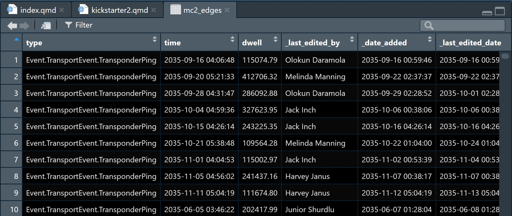
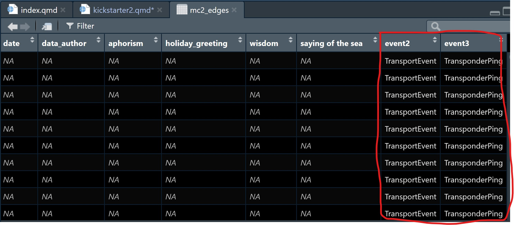
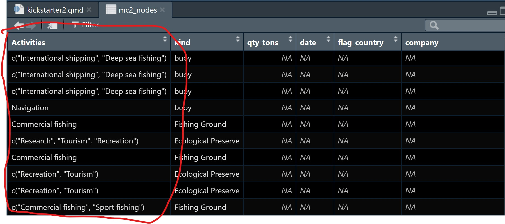
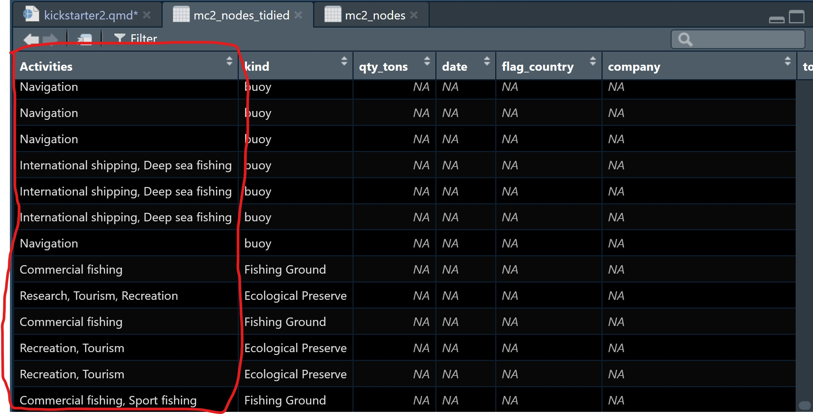

pacman::p_load(tidyverse, jsonlite)Kickstarter 2: Working with Graph Data
Overview
This kickstarter aims to provide you hands-on guide on how to work with graph data. By the end of this hands-on exercise, you will be able to use appropriate R functions to perform the following tasks:
- Importing graph data in json file format into R
- Extracting the nodes and edges (also known as links) from imported graph data.
- Wrangling text data type.
Getting Started
For the purpose of this exercise, three R packages will be used. They are tidyverse, jsonlite and SmartEDA.
Note
You are required to install the R packages above, if necessary, before continue to the next step.
In the code chunk below, p_load() of pacman package is used to load the R packages into R environemnt.
Importing Graph Data
For the purpose of this exercise, mc2.json file will be used. Before getting started, you should have the data set in the data sub-folder.
Warning
This is a very large data set. Please ensure that you have added a line data/ in the .gitignore file.
In the code chunk below, fromJSON() of jsonlite package is used to import mc2.json file into R and save the output object
mc2_data <- fromJSON("data/mc2.json")The output is called mc2_data. It is a large list R object.
Wrangling and tidying edges
In this section, you will learn how to extract and wrangle the edges object.
Extracting edges
The code chunk below will be used to extract the links data.frame of mc2_data and save it as a tibble data.frame called mc2_edges.
mc2_edges <- as_tibble(mc2_data$links) %>%
distinct() Next, glimpse() of dplyr will be used to reveal the structure of mc2_edges tibble data.table
glimpse(mc2_edges)Rows: 271,643
Columns: 17
$ type <chr> "Event.TransportEvent.TransponderPing", "Event.Tra…
$ time <chr> "2035-09-16T04:06:48.185987", "2035-09-20T05:21:33…
$ dwell <dbl> 115074.79, 412706.32, 286092.88, 327623.95, 243225…
$ `_last_edited_by` <chr> "Olokun Daramola", "Melinda Manning", "Olokun Dara…
$ `_date_added` <chr> "2035-09-16T00:59:46.300100", "2035-09-22T02:37:37…
$ `_last_edited_date` <chr> "2035-09-16T00:59:46.300100", "2035-09-22T02:37:37…
$ `_raw_source` <chr> "Oceanus Vessel Locator System", "Oceanus Vessel L…
$ `_algorithm` <chr> "OVLS-Catch&Hook", "OVLS-Catch&Hook", "OVLS-Catch&…
$ source <chr> "City of Haacklee", "City of Haacklee", "City of H…
$ target <chr> "perchplundererbc0", "perchplundererbc0", "perchpl…
$ key <int> 0, 1, 2, 3, 4, 5, 6, 7, 8, 0, 1, 2, 3, 4, 5, 6, 7,…
$ date <chr> NA, NA, NA, NA, NA, NA, NA, NA, NA, NA, NA, NA, NA…
$ data_author <chr> NA, NA, NA, NA, NA, NA, NA, NA, NA, NA, NA, NA, NA…
$ aphorism <chr> NA, NA, NA, NA, NA, NA, NA, NA, NA, NA, NA, NA, NA…
$ holiday_greeting <chr> NA, NA, NA, NA, NA, NA, NA, NA, NA, NA, NA, NA, NA…
$ wisdom <chr> NA, NA, NA, NA, NA, NA, NA, NA, NA, NA, NA, NA, NA…
$ `saying of the sea` <chr> NA, NA, NA, NA, NA, NA, NA, NA, NA, NA, NA, NA, NA…
Note
From the table above, the following data issues can be identified:
- Columns with date data type are not in the correct format.
- some field names start with “_” need to be rename in order to avoid unnecessary coding issue in the later part of the tasks.
Correcting date data type
In the code chunk below, as_datetime() of lubridate package is used to convert fields with character date into POSIXt format.
mc2_edges$time <- as_datetime(mc2_edges$time)
mc2_edges$"_last_edited_date" <- as_datetime(mc2_edges$"_last_edited_date")
mc2_edges$"_date_added" <- as_datetime(mc2_edges$"_date_added")
mc2_edges$"date" <- as_datetime("mc2_edges$date")Next, glimpse() will be used to confirm if the process have been performed correctly.
glimpse(mc2_edges)Rows: 271,643
Columns: 17
$ type <chr> "Event.TransportEvent.TransponderPing", "Event.Tra…
$ time <dttm> 2035-09-16 04:06:48, 2035-09-20 05:21:33, 2035-09…
$ dwell <dbl> 115074.79, 412706.32, 286092.88, 327623.95, 243225…
$ `_last_edited_by` <chr> "Olokun Daramola", "Melinda Manning", "Olokun Dara…
$ `_date_added` <dttm> 2035-09-16 00:59:46, 2035-09-22 02:37:37, 2035-09…
$ `_last_edited_date` <dttm> 2035-09-16 00:59:46, 2035-09-22 02:37:37, 2035-10…
$ `_raw_source` <chr> "Oceanus Vessel Locator System", "Oceanus Vessel L…
$ `_algorithm` <chr> "OVLS-Catch&Hook", "OVLS-Catch&Hook", "OVLS-Catch&…
$ source <chr> "City of Haacklee", "City of Haacklee", "City of H…
$ target <chr> "perchplundererbc0", "perchplundererbc0", "perchpl…
$ key <int> 0, 1, 2, 3, 4, 5, 6, 7, 8, 0, 1, 2, 3, 4, 5, 6, 7,…
$ date <dttm> NA, NA, NA, NA, NA, NA, NA, NA, NA, NA, NA, NA, N…
$ data_author <chr> NA, NA, NA, NA, NA, NA, NA, NA, NA, NA, NA, NA, NA…
$ aphorism <chr> NA, NA, NA, NA, NA, NA, NA, NA, NA, NA, NA, NA, NA…
$ holiday_greeting <chr> NA, NA, NA, NA, NA, NA, NA, NA, NA, NA, NA, NA, NA…
$ wisdom <chr> NA, NA, NA, NA, NA, NA, NA, NA, NA, NA, NA, NA, NA…
$ `saying of the sea` <chr> NA, NA, NA, NA, NA, NA, NA, NA, NA, NA, NA, NA, NA…Changing field name
In the code chunk below, rename() of dplyr package is used to change the following fields.
mc2_edges <- mc2_edges %>%
rename("last_edited_by" = "_last_edited_by",
"date_added" = "_date_added",
"last_edited_date" = "_last_edited_date",
"raw_source" = "_raw_source",
"algorithm" = "_algorithm") Splitting words
From the screenshot below, we can see that the text in type field are not in a tidy manner.

We are going to tidy the type column by creating two columns as shown below.

The steps below will be used to split text in type column into two columns: namely event1 and event2.
Note
The steps below can be combined in one code chunk. However, I purposely separate them so that you can study the output of each step.
word_list <- strsplit(mc2_edges$type, "\\.")The code chunk below will be used to find the maximum number of elements in any split
max_elements <- max(lengths(word_list))The code chunk below will be used to pad shorter splits with NA values to make them all the same length.
word_list_padded <- lapply(word_list,
function(x) c(x, rep(NA, max_elements - length(x))))word_df <- do.call(rbind, word_list_padded)
colnames(word_df) <- paste0("event", 1:max_elements)Since the output above is a matrix, the code chunk below is used to convert word_df into a tibble data.frame.
word_df <- as_tibble(word_df) %>%
select(event2, event3)
class(word_df)[1] "tbl_df" "tbl" "data.frame"The code chunk below appends the extracted columns back to mc2_edges tibble data.frame.
mc2_edges <- mc2_edges %>%
cbind(word_df)Before moving to the next task, it will be wiser to save the tidied mc2_edges into a physical file for future used. By doing so, you also do not have to repeat the steps above.
The code chunk below will be used to save mc2_edges into R rds file format.
Note
Please ensure that there is a sub-folder called rds in the data folder. If not, you should create one first.
write_rds(mc2_edges, "data/rds/mc2_edges.rds")Wrangling and tidying nodes
Warning
This section mainly focuses on tidying and wrangling text data in the Activities column. For other data checking, tidying and wrangling tasks, please refer to the steps discussed above.
Extracting nodes
The code chunk below will be used to extract the nodes data.frame of mc2_data and parses it as a tibble data.frame called mc2_nodes.
mc2_nodes <- as_tibble(mc2_data$nodes) %>%
distinct()Next, the code chunk below is used to reveal the data structure of mc2_nodes tibble data.frame.
glimpse(mc2_nodes)Rows: 5,637
Columns: 20
$ type <chr> "Entity.Commodity.Fish", "Entity.Commodity.Fish",…
$ `_last_edited_by` <chr> "Clepper Jessen", "Clepper Jessen", "Haenyeo Hyun…
$ `_date_added` <chr> "2033-09-04T00:00:00", "2034-01-21T00:00:00", "20…
$ `_last_edited_date` <chr> "2035-01-25T00:00:00", "2035-01-04T00:00:00", "20…
$ `_raw_source` <chr> "", "", "", "", "", "", "", "", "", "", "Oceanus:…
$ `_algorithm` <chr> "", "", "", "", "", "", "", "", "", "", "", "", "…
$ name <chr> "Cod/Gadus n.specificatae", "Birdseye/Pisces frig…
$ id <chr> "gadusnspecificatae4ba", "piscesfrigus900", "pisc…
$ Name <chr> NA, NA, NA, NA, NA, NA, NA, NA, NA, NA, "Haacklee…
$ Description <chr> NA, NA, NA, NA, NA, NA, NA, NA, NA, NA, NA, NA, N…
$ Activities <list> <NULL>, <NULL>, <NULL>, <NULL>, <NULL>, <NULL>, …
$ kind <chr> NA, NA, NA, NA, NA, NA, NA, NA, NA, NA, "city", "…
$ qty_tons <dbl> NA, NA, NA, NA, NA, NA, NA, NA, NA, NA, NA, NA, N…
$ date <chr> NA, NA, NA, NA, NA, NA, NA, NA, NA, NA, NA, NA, N…
$ flag_country <chr> NA, NA, NA, NA, NA, NA, NA, NA, NA, NA, NA, NA, N…
$ company <chr> NA, NA, NA, NA, NA, NA, NA, NA, NA, NA, NA, NA, N…
$ tonnage <int> NA, NA, NA, NA, NA, NA, NA, NA, NA, NA, NA, NA, N…
$ length_overall <int> NA, NA, NA, NA, NA, NA, NA, NA, NA, NA, NA, NA, N…
$ style <chr> NA, NA, NA, NA, NA, NA, NA, NA, NA, NA, NA, NA, N…
$ fish_species_present <list> <NULL>, <NULL>, <NULL>, <NULL>, <NULL>, <NULL>, …From the table above, beside the date data type and inappropriate field name issues we discussed earlier, two additional data issues can be observed. They are:
- The values in Activities and fish_species_present fields are in list data type, which will affect the ability to process and to analyse the data.
- As shown in the screenshot below, some values in the Activities field are not ready to be analyse without further tidying (i.e. removing c(““)).

Tidying text field
In the code chunk below, mutate() of dplyr and gsub() of Base R are used to perform the data todying task.
mc2_nodes_tidied <- mc2_nodes %>%
mutate(Activities = gsub("c[(]", "", Activities)) %>%
mutate(Activities = gsub("\"", "", Activities)) %>%
mutate(Activities = gsub("[)]", "", Activities)) mc2_nodes_tidied <- mc2_nodes_tidied %>%
mutate(fish_species_present = gsub("c[(]", "", fish_species_present)) %>%
mutate(fish_species_present = gsub("\"", "", fish_species_present)) %>%
mutate(fish_species_present = gsub("[)]", "", fish_species_present)) Notice that the text values in Activities column are in tody manner now.

Note
Before moving to the next task, it is a good practice to save the tidied data into a physical file for future use.